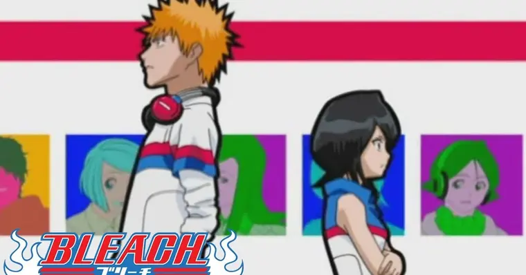

My Hero Academia foi inspirado em diversos elementos da cultura pop, incluindo super-heróis ocidentais, mangás clássicos e filmes de ação. Kohei Horikoshi criou a série com o objetivo de explorar a ideia de "o que é ser um herói? " e como as pessoas comuns podem se tornar extraordinárias em um mundo cheio de superpoderes.

Ainda que divida opiniões por conta de como a obra foi adaptada para a animação, Bleach é um dos grandes marcos da cultura de anime no Brasil ali do meio dos anos 2000 – junto com Naruto e One Piece, todos chegando quase ao mesmo tempo por aqui – e tem um espacinho guardado nos nossos corações.
Agora, 8 anos depois do fim do anime, um novo arco animado, para finalizar a história, foi anunciado. Como preparação para o que está por vir, que tal relembrar – ou descobrir – algumas curiosidades sobre Bleach? Vem comigo?
